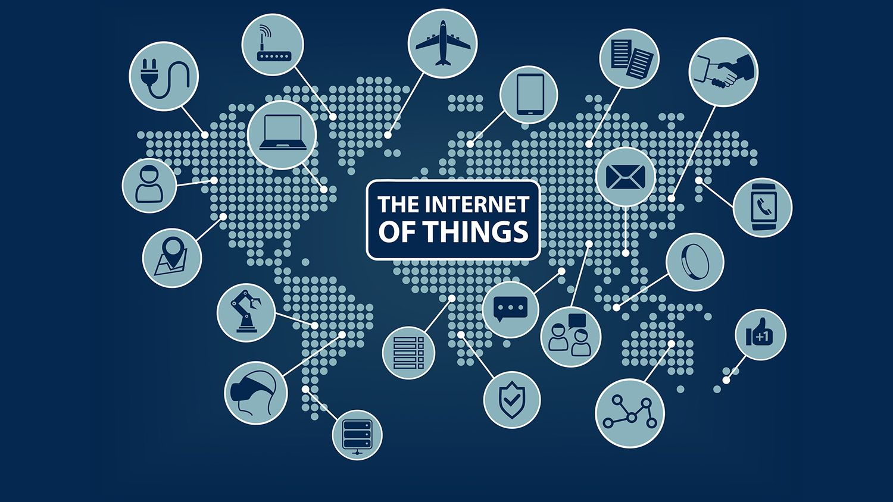

The Internet of Things is turning our physical world into a complex and dynamic system of connected devices on an unprecedented scale. Advances in technology are making possible a more boardly adoption of IoT, from pill-shaped micro-cameras that can pinpoint thousands of images within the body, to smart sensors that can assess crop conditions on a farm, to the smart home devices that are becoming increasingly common.
